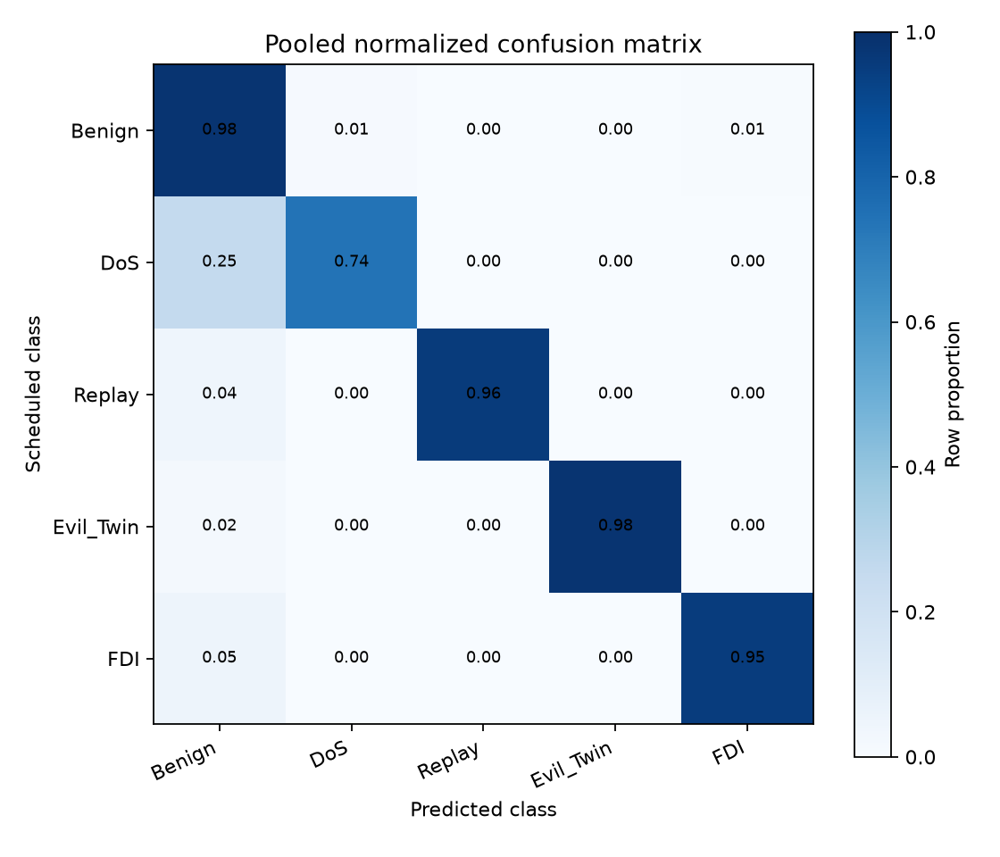
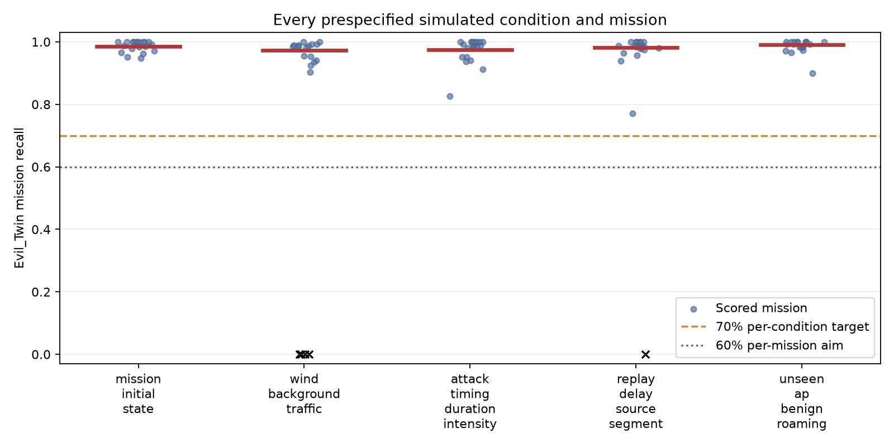

ACPDAD — Attack Detection Dashboard
V5.4R1 simulated evaluation
SIMULATED ONLY; not SITL, captured traffic, or real-world validation. Frozen model histgb_temporal.
On emitted, scorable rows: pooled Evil_Twin precision 98.23%; recall 98.18% (run-clustered 95% CI 97.73%–98.58%); benign FPR 1.66%.
Counting every scheduled active attack sample and treating no prediction as a miss: Evil_Twin recall 70.03% (run-clustered 95% CI 65.04%–74.53%). The 80% system-level recall target is not met; wind/background traffic is 51.76%, replay-delay/source-segment is 63.91%.
Macro-F1 93.60%; balanced accuracy 92.30%; accuracy 96.74%; majority baseline 68.29%.


Conditions
- mission_initial_state: scored-row EV recall 98.47%; schedule-wide recall including missing-output misses 79.56%; EV precision 99.50%; benign FPR 1.29%.
- wind_background_traffic: scored-row EV recall 97.33%; schedule-wide recall including missing-output misses 51.76%; EV precision 99.38%; benign FPR 2.53%.
- attack_timing_duration_intensity: scored-row EV recall 97.55%; schedule-wide recall including missing-output misses 74.87%; EV precision 99.40%; benign FPR 1.50%.
- replay_delay_source_segment: scored-row EV recall 98.11%; schedule-wide recall including missing-output misses 63.91%; EV precision 99.21%; benign FPR 1.44%.
- unseen_ap_benign_roaming: scored-row EV recall 99.02%; schedule-wide recall including missing-output misses 79.94%; EV precision 94.69%; benign FPR 1.75%.
Full report; prediction, per-run, metrics and integrity files are in analysis/.